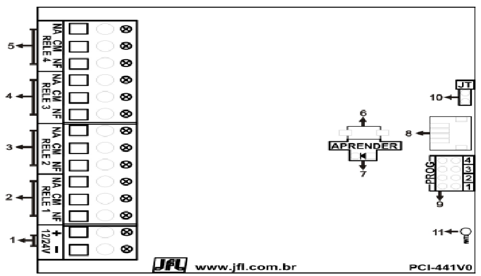
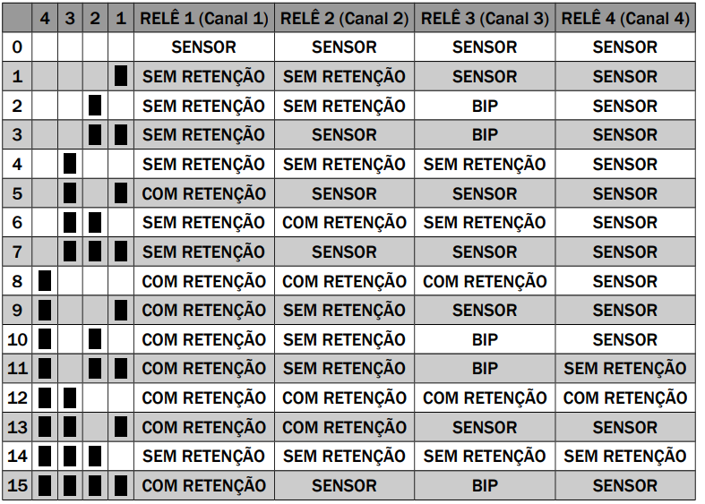
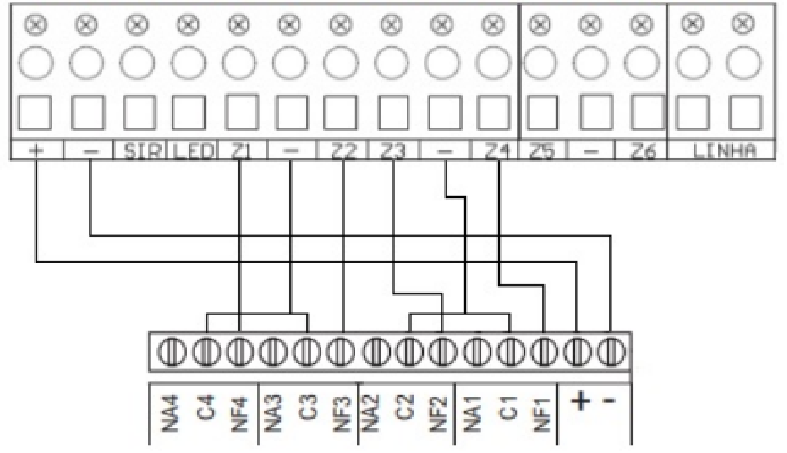

RRC-400 – Receptor Multifuncional
O RRC-400 é um receptor multifuncional microcontrolado que possui quatro canais programáveis,
que podem ser ativados de acordo com a configuração dos jumpers (PROG).
Esse receptor aceita sensores de abertura sem fio e sensores infravermelho sem fio na frequência de
433,92 MHz no sistema Hopping Code.
Também aceita controles remotos nos sistemas Hopping Code e Rolling Code, ambos na frequência 433,92 MHz.
O RRC-400 pode ser usado para automação de cargas através de dispositivos sem fio, com capacidade de armazenamento de
300 controles e 40 sensores.
O receptor RRC-400 se destaca no uso de automação e expansão de capacidade de memória de dispositivos sem fio.
Também é indicado para retransmitir via cabo para centrais de alarme, movimentadores, entre outros,
os sinais recebidos sem fio de sensores ou controles nele armazenados.
1.1 Características Gerais
- Frequência: 433,92 MHz;
- Alcance de transmissão: 100 metros sem obstáculos;
- Dupla tecnologia: Hopping Code e Rolling Code;
- Canal de saída: 4 canais programáveis;
- Consumo em repouso: 15mA / 12Vc.c.;
- Consumo em acionamento: 120mA / 12Vc.c.;
- Tensão de alimentação: 12 a 24Vc.c.;
- Dimensões: 125 x 85 x 40 mm;
- Peso: 170 g;
- Máximo de controles: 300;
- Máximo de sensores: 40;
-
Carga máxima para cada relé:
- 12Vc.c. = 3A (36W);
- 127Vc.a. = 2A (254W);
- 220Vc.a. = 2A (440W).

RRC-400 – Instalação e Programação
2. Descrição dos Componentes
- 1) Alimentação: 12 a 24Vc.c.
- 2) Canal de saída 1 (relê 1)
- 3) Canal de saída 2 (relê 2)
- 4) Canal de saída 3 (relê 3)
- 5) Canal de saída 4 (relê 4)
- 6) TECLA APRENDER: usada para cadastrar dispositivos sem fio
- 7) LED APRENDER (Vermelho): indicador visual do processo de cadastramento
- Aceso 2s após TECLA APRENDER: dispositivo sem fio cadastrado
- Aceso 2s quando acionado: dispositivo já cadastrado
- Piscando: recebendo dispositivo não cadastrado
- 8) Conector BOOT: usado para atualização de firmware
- 9) Jumpers 1, 2, 3 e 4 (PROG): utilizados para programação dos canais de saída
- 10) Jumper JT: usado para programação de tempo da função SEM RETENÇÃO
- 11) Antena: utilizada para recepção de dispositivos sem fio na frequência 433,92 MHz
3. Instalação
O receptor deve ser instalado em local alto, para maior alcance de seus dispositivos.
Instalações em ambientes com muitas paredes podem reduzir o alcance para até 15 metros.
O receptor não deve ser instalado abaixo do nível do solo.
Transmissores mais potentes próximos podem interferir no funcionamento, reduzindo a área de cobertura.
4. Programação
O RRC-400 permite cadastrar os dispositivos sem fio e programar qual será a função de seus canais de saída através dos jumpers de programação.
4.1 Cadastro de Sensores e Controles Remotos
Para cadastrar um dispositivo:
- Pressione e segure uma tecla do controle remoto ou ative o sensor (LED APRENDER pisca).
- Pressione e solte a TECLA APRENDER (LED acende por 2s e apaga).
Todas as teclas do controle podem ser cadastradas:
- Tecla 1 → Canal 1 (relê 1)
- Tecla 2 → Canal 2 (relê 2)
- Tecla 3 → Canal 3 (relê 3)
- Tecla 4 → Canal 4 (relê 4)
Observação:
- Se apenas um canal estiver programado para acionamento via controle remoto, qualquer tecla acionará o canal correspondente.
- Para sensores: se mais de um canal estiver configurado como SENSOR:
- Zona 1 → Canal 1
- Zona 2 → Canal 2
- Zona 3 → Canal 3
- Zona 4 → Canal 4
Se apenas um canal tiver a função SENSOR, os sensores o acionarão independentemente da zona configurada.
Limite de Memória
O número máximo é de 300 controles remotos e 40 sensores sem fio.
Ao gravar um novo dispositivo quando a memória está cheia, ele sobrescreve a primeira posição de memória.
RRC-400 – Programação de Memória e Canais
4.1 Apagar Memória de Sensores e Controles
Para apagar todos os dispositivos cadastrados (sensores e controles remotos):
- Pressione e segure a TECLA APRENDER por 7 segundos.
- O LED APRENDER irá apagar.
- Todas as memórias de sensores e controles serão apagadas.
4.2 Programação dos Canais de Saída (Jumpers de Programação)
O receptor pode ser programado para obedecer ao controle remoto e/ou ao sensor.
A configuração é feita através dos jumpers 1, 2, 3 e 4 (PROG), correspondentes aos canais:
- Relê 1
- Relê 2
- Relê 3
- Relê 4

Para a programação do JUMPER JT, segue a seguinte definição:
– Sem Jumper: o canal ficará atracado por aproximadamente 0,6 segundos.
– Com Jumper: o canal ficará atracado por aproximadamente 2 segundos.
Obs.: Após qualquer alteração nos jumpers de programação, reinicie o equipamento para que as configurações se tornem operantes.
5. Modo de Operação dos Canais
O receptor RRC-400 possui diferentes modos de operação para os canais, definidos conforme a programação:
-
COM RETENÇÃO: O canal aciona ao pressionar o botão do controle remoto e desaciona ao pressioná-lo novamente.
-
SEM RETENÇÃO: Ao pressionar o botão do controle remoto, o canal aciona por um tempo (0,6 ou 2 segundos), dependendo da programação do JUMPER JT.
-
BIP: Serve para emitir um sinal sonoro através de uma sirene indicando que o canal 1 foi acionado ou desacionado.
- Se o canal 1 estiver programado como SEM RETENÇÃO e o canal 3 como BIP, ao acionar ou desacionar o canal 1, o canal 3 irá atracar e desatracar 1 vez.
- Se o canal 1 estiver programado como COM RETENÇÃO e o canal 3 como BIP, ao acionar o canal 1, o canal 3 irá atracar e desatracar 2 vezes e, ao desacioná-lo, o canal 3 irá atracar e desatracar 1 vez.
-
SENSOR: Permite que sensores sem fio acionem o canal do receptor.
Ao receber um sinal do sensor, o canal aciona por 4 segundos.
Se o sensor for acionado novamente enquanto o canal já estiver ativo, a contagem do tempo será reiniciada.
Quando apenas um canal do receptor estiver programado para receber sensor, o jumper de zona do sensor pode estar em qualquer posição.
